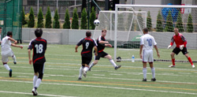
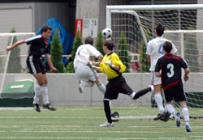
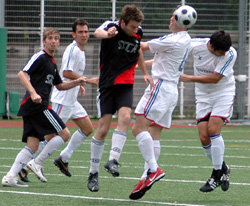
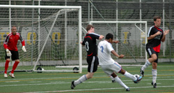
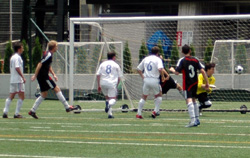

|
ASIJ, Saturday 7th June,
BFC`s recruiting foray into the international school system has paid dividends as the TML champions celebrated their second successive title by putting third placed Sala to the sword on Saturday, thanks largely to the quality of their teenage strike force.
The contest didn`t quite have the usual sense of anticipation that usually accompanies this fixture. Newly crowned champions BFC were coming off an inexplicable thumping at the hands of the Hibs in the cup final whilst Sala had succumbed 2-1 to the same opposition a week prior thanks in no small part to the genetically engineered “Mini Hitoshi” who thwarted attack after Sala attack with his bionic limbs.
That game will be remembered as one of the most entertaining matches of the season but a number of questions were raised afterwards. Should cloning be banned in the TML? If so, captain Brooke-Smith, a trained geneticist and vocal advocate of human cloning, could be forced to scrap his plans to engineer a “Mini Guido” and “Super Lenny” in time for the start of next season.
As Sala strode onto the lush plastic turf of the American School in Japan, home to the mighty Mustangs, Brookey was conspicuously absent. A far more composed team talk, devoid of expletives, followed from Guido who reminded everyone that Sala hadn`t beaten BFC in the league for over two years when a late Roddy Charles strike sealed all three points. Pride was at stake.

In hot conditions Sala started languidly and were immediately put under pressure by BFC`s nimble young forwards. With the amount of possession BFC were winning it was no surprise to see them take the lead but the manner in which they did so was rather unusual. Carlos Aranda seemed to be going nowhere about 25 yards out from goal before wriggling away from his marker and scuffing a low shot towards the far post. Sid, confused by the array of lines and markings scattered across his field of vision, calculated the puck was going wide of the three point zone for a Sala first down. Needless to say that`s not what happened.
BFC`s second was more conventional. After a Sala corner was cleared, a big hoof from Carlos put a very rapid BFC striker through in acres of space. He made no mistake, finishing tidily. 2-0 at half time.
Given their first half performance there was little to suggest that Sala had any chance of salvaging a result but they began the second half positively. Scott Thompson, face on fire by now, and the big German, Guido, were winning more of the ball in midfield and importantly Lenny Tui started getting into the game on the left. It was his ball that sent Bedingfield into space. The striker, fairly anonymous for most of the match, cut the ball back to Dan Bard, playing one of his best games of the season, who sent an inviting cross to the back post for Guido to calmly nod in.
Five minutes later Sala were level. Bedingfield was bundled over on the left wing and Lenny wasted no time taking the free kick. It caught the BFC back line by surprise and Toby Long nonchalantly headed the ball in at the back post. If there was a TML golden noggin award Long would surely win it.
At this point it may have looked to any spectators as if Sala might go on and take all three points. So it was quite remarkable that a mere five minutes later BFC were again two goals ahead. Credit must go to BFC`s pubescent front two. One managed to skip past Ian Jelley (no mean feat) and lash the ball past Sid at the near post. The other, in an obvious attempt to outdo his mate, scored with a fine volley about thirty seconds later.
Report by Dhugal Beddingfield
|